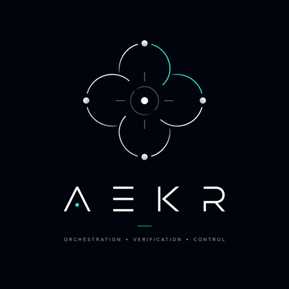

AEKR
AI Engineering Knowledge Repo
Humans orchestrate. Machines execute.
What is AEKR?
AEKR is an engineering knowledge system and orchestration approach for AI-assisted software development. It gives AI agents explicit structure, constraints, and validation to work within — and keeps a human in control of what those agents are allowed to decide.
Orchestration
Human-Guided Human-Gated AI-Orchestrated
The goal isn't removing humans from the loop. It's moving them up it — from executing every task by hand to defining intent, boundaries, architecture, and validation, while agents handle execution.
- Intent
- Human Orchestrator
- Structured Context
- AI Agents
- Execution
- Validation
- Human Gate
Human Orchestration
AI can generate, analyze, test, review, and execute. Humans remain responsible for the things that don't delegate: intent, context, boundaries, architecture, judgment, validation, and accountability. The emphasis is orchestration, not prompting.